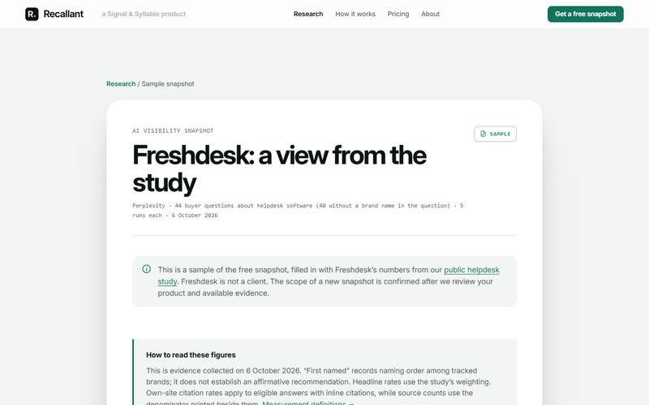

Understand
Visibility research
Map brand mentions, source citations and question-level gaps across an agreed set of AI answers.
Explore the researchAI search visibility · B2B software
Understand where your brand appears in AI answers, which sources get cited, and what deserves attention next.
Research, a focused improvement pilot, and scoped ongoing support.
Buyer questionWhich helpdesk has the best AI chatbot for customer support?
Sources linked mostcloudtalk.io · cotera.co · g2.com · eesel.ai
Inside the research
Choose a question to see the brands named and sources cited across five saved answers. This explorer uses the 6 October study, not a live AI search.
Six questions from the saved study. Explore all 40 →
Best for · 5 runs
First named
PlainAlso first: Intercom (1 of 5)
Perplexity with live web search, 6 October 2026. Counts are runs out of 5. Brands named in the question are left out, as in the study.
First-named counts record order among tracked brands. A mention, a citation and an affirmative recommendation are different signals. How to read them.
From observation to action
Start with one business decision. We connect evidence to a clear next step, with the questions, sources and scope agreed before work begins.
Understand
Map brand mentions, source citations and question-level gaps across an agreed set of AI answers.
Explore the researchImprove
A focused review, up to five prioritised findings, one priority-page draft and a clearer enquiry route.
₹14,400 plus applicable taxes
See the complete scopeLearn
Agree a repeatable measurement scope and review what changes, alongside the work completed.
Discuss ongoing supportA deliverable you can inspect
Open the Freshdesk sample to see how a brand’s visibility becomes a focused review: where it appears, where it is absent, and which pages deserve investigation.
Built from the published helpdesk study. It is a research example, not a client result.

Start a conversation
Start with a snapshot request, a focused pilot, or a scoped audit. We will confirm the right fit before work begins.
Enquiries are reviewed through our shared Signal & Syllable desk.
Prefer to talk first? Book a 20-minute call